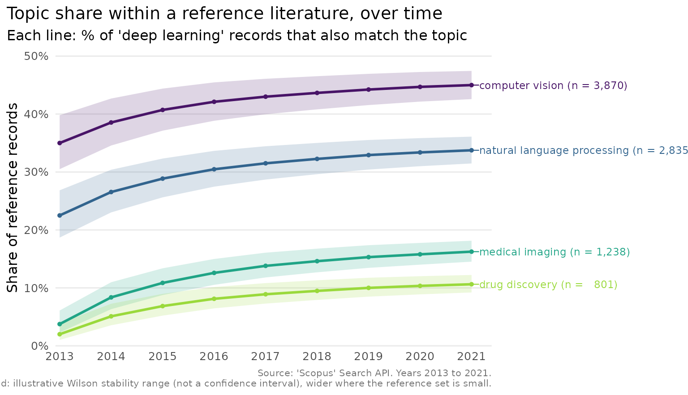
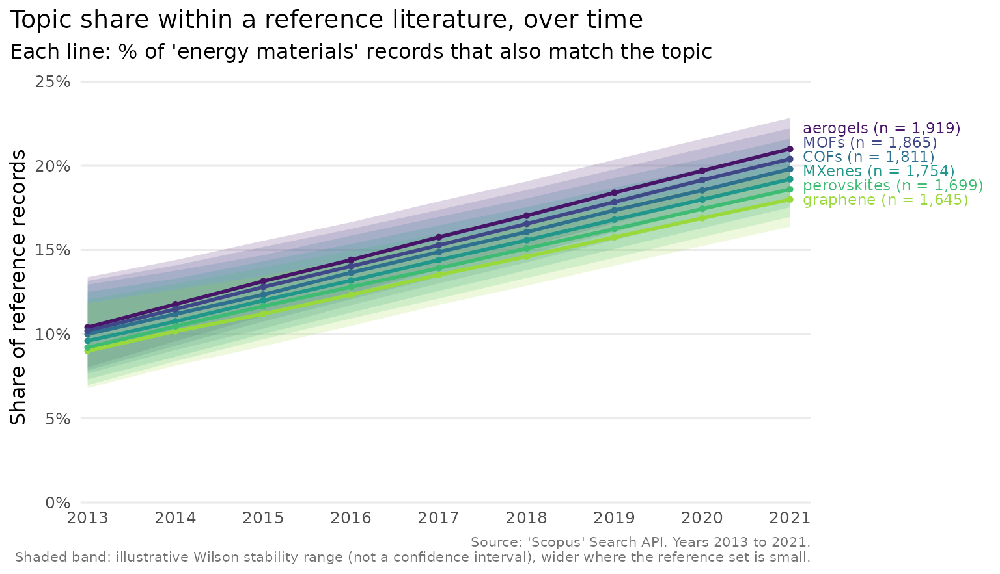
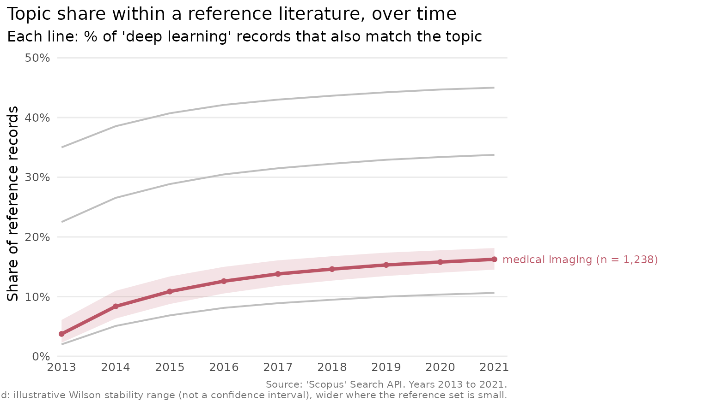
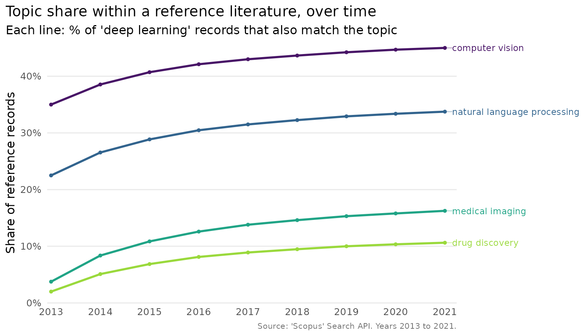

A common bibliometric question is not how large a literature is, but
how its internal emphasis shifts over time. Within deep-learning
research, say, is the share of work that also concerns medical imaging
growing faster than the share about computer vision?
scopus_compare_topics() answers exactly this, and
plot_scopus_comparison() shows the answer. The comparison
itself contacts the API, so it is shown but not run; the plotting is
reproduced offline from an object of the same shape.
What the comparison measures
For each year and each comparison term, the function counts the records matching the reference topic and that term, and expresses it as a percentage of the records matching the reference alone. A value of 30% for “computer vision” in 2020 means that 30% of the deep-learning records that year also mention computer vision. The reference is the denominator, so it sits at 100% by construction and is not drawn.
cmp <- scopus_compare_topics(
reference_query = "deep learning",
comparison_terms = c("computer vision", "natural language processing",
"medical imaging", "drug discovery"),
years = 2013:2021,
field = "TITLE-ABS-KEY"
)The shape of the result
The result is a tidy table with one row per topic and year. We build one here with the same columns so the rest of the article runs without a key. The reference set grows over the period, which the uncertainty band will reflect.
years <- 2013:2021
ref_n <- round(seq(400, 1600, length.out = length(years)))
mk <- function(from, to) round(seq(from, to, length.out = length(years)))
counts <- list(
"computer vision" = mk(140, 720),
"natural language processing" = mk(90, 540),
"medical imaging" = mk(15, 260),
"drug discovery" = mk(8, 170)
)
cmp <- tibble::tibble(
query = "q",
query_type = c(rep("reference", length(years)),
rep("comparison", length(counts) * length(years))),
abridged_query = c(rep("deep learning", length(years)),
rep(names(counts), each = length(years))),
year = rep(years, length(counts) + 1),
n = c(ref_n, unlist(counts, use.names = FALSE)),
reference_n = rep(ref_n, length(counts) + 1),
comparison_percentage = 100 * c(ref_n, unlist(counts, use.names = FALSE)) /
rep(ref_n, length(counts) + 1),
average_comparison_percentage = c(rep(100, length(years)),
rep(c(40, 33, 15, 9), each = length(years)))
)
class(cmp) <- c("scopus_comparison", class(cmp))
cmp
#> <scopus_comparison> (5 topics)
#> # A tibble: 45 × 8
#> query query_type abridged_query year n reference_n comparison_percentage
#> <chr> <chr> <chr> <int> <dbl> <dbl> <dbl>
#> 1 q reference deep learning 2013 400 400 100
#> 2 q reference deep learning 2014 550 550 100
#> 3 q reference deep learning 2015 700 700 100
#> 4 q reference deep learning 2016 850 850 100
#> 5 q reference deep learning 2017 1000 1000 100
#> 6 q reference deep learning 2018 1150 1150 100
#> 7 q reference deep learning 2019 1300 1300 100
#> 8 q reference deep learning 2020 1450 1450 100
#> 9 q reference deep learning 2021 1600 1600 100
#> 10 q comparison computer visi… 2013 140 400 35
#> # ℹ 35 more rows
#> # ℹ 1 more variable: average_comparison_percentage <dbl>The comparison_percentage column is the per-year share,
and average_comparison_percentage is the same ratio
computed over the whole period, which is what orders the topics. A year
in which the reference has no records has no defined share and is
recorded as NA rather than as a misleading zero.
A first plot

The chart uses whole-number year breaks, a colour-blind-safe palette
and, because there are only a few topics, labels the lines directly so
the reader need not match colours to a legend. Each label carries the
topic’s total record count. The shaded band around each line is a Wilson
stability range: it is wide in the early years, when the reference set
is small and the share would move easily, and narrows as the literature
grows. Because ‘Scopus’ returns exact counts rather than a sample, the
band is illustrative rather than a confidence interval, a point the
plot_scopus_comparison() help page sets out.
When lines converge at the right end
Direct labels are legible only if they do not overlap, and topics
sometimes end the period at nearly the same share.
plot_scopus_comparison() spreads converging labels apart
automatically, at the point the figure is actually drawn, so they stay
readable at any figure size rather than stacking into an unreadable
pile. Here six sub-areas of materials-science research all end 2013–2021
within three points of one another.
years <- 2013:2021
ends <- c(18, 18.6, 19.2, 19.8, 20.4, 21)
names(ends) <- c("graphene", "perovskites", "MXenes", "COFs", "MOFs", "aerogels")
ref_n <- round(seq(500, 2000, length.out = length(years)))
converge <- function(end) round(end * (0.5 + 0.5 * (0:(length(years) - 1)) / (length(years) - 1)) * ref_n / 100)
counts <- lapply(ends, converge)
cmp_converging <- tibble::tibble(
query = "q",
query_type = c(rep("reference", length(years)),
rep("comparison", length(counts) * length(years))),
abridged_query = c(rep("energy materials", length(years)),
rep(names(counts), each = length(years))),
year = rep(years, length(counts) + 1),
n = c(ref_n, unlist(counts, use.names = FALSE)),
reference_n = rep(ref_n, length(counts) + 1),
comparison_percentage = 100 * c(ref_n, unlist(counts, use.names = FALSE)) /
rep(ref_n, length(counts) + 1),
average_comparison_percentage = c(rep(100, length(years)),
rep(ends, each = length(years)))
)
class(cmp_converging) <- c("scopus_comparison", class(cmp_converging))
plot_scopus_comparison(cmp_converging)
Without this, six labels ending within three points of each other would print on top of one another; here every one is still readable, each still joined to its own line by a short leader.
Drawing the eye to one topic
When one topic is the focus of a figure, highlight draws
it in an accent colour and greys the rest, which keeps the context
visible without letting it compete.
plot_scopus_comparison(cmp, highlight = "medical imaging")
Adjusting the labels
The count suffix on each label can be turned off, and the uncertainty band can be removed, when a cleaner look is wanted.
plot_scopus_comparison(cmp, pub_count_in_legend = FALSE, interval = FALSE)
The return value is an ordinary ggplot2 object, so any further
adjustment, a different theme or a saved file, is one + or
one ggplot2::ggsave() away.
Reading the result as a table
Sometimes the numbers matter more than the picture. Because the output is a tibble, the usual tools apply: here are the topics ranked by their average share.
comp <- cmp[cmp$query_type == "comparison", ]
unique(comp[, c("abridged_query", "average_comparison_percentage")])
#> <scopus_comparison> (4 topics)
#> # A tibble: 4 × 2
#> abridged_query average_comparison_percentage
#> <chr> <dbl>
#> 1 computer vision 40
#> 2 natural language processing 33
#> 3 medical imaging 15
#> 4 drug discovery 9